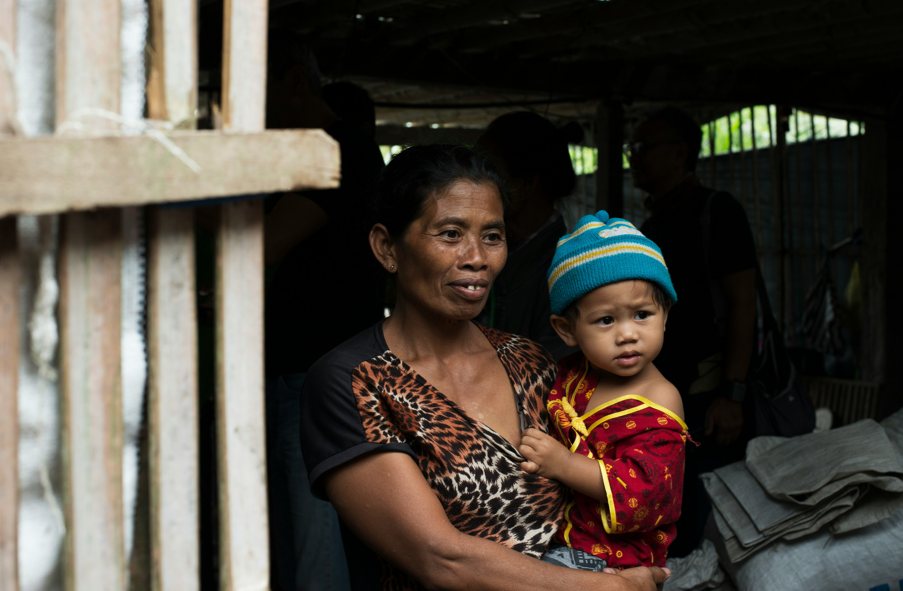
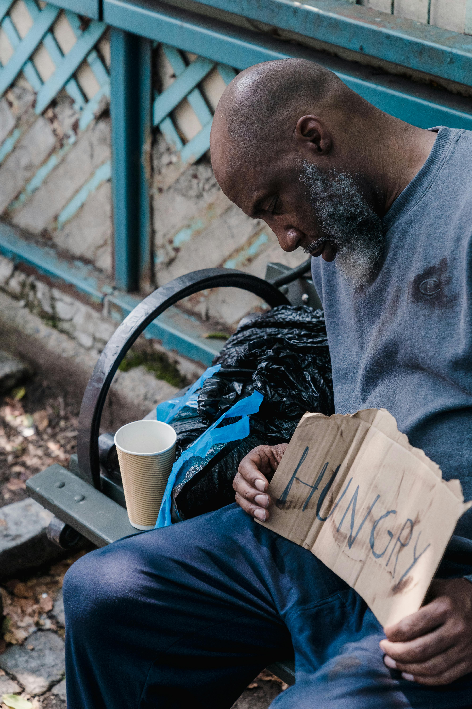
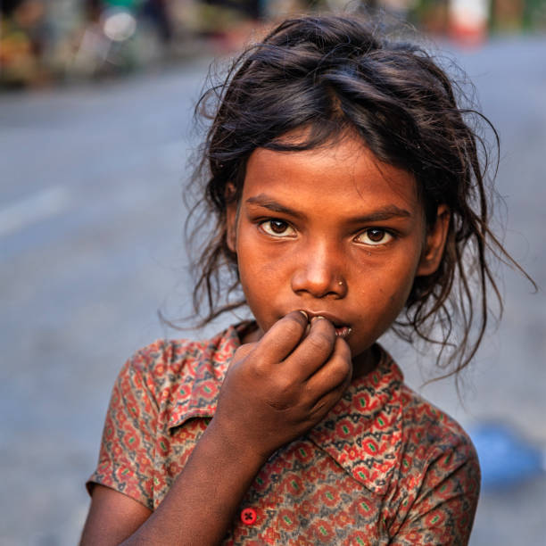

Share a Meal, Share the love!
Hunger disproportionately affects vulnerable populations, including
children, the elderly, and low-income families. Malnutrition can lead
to severe health problems, stunted growth in children, and weakened
immune systems. Providing food assistance is crucial for improving the
well-being of those most at risk.


Millions of people around the world are facing hunger, with a
significant number lacking access to basic nutrition. This crisis is
particularly dire in developing countries, where poverty and conflict
exacerbate food insecurity. Addressing these issues is essential for
fostering healthier and more equitable communities.
Food donations play a vital role in combating hunger by redistributing
surplus food to those in need. Local food banks and shelters rely on
community support to provide essential nutrition to struggling
families. Engaging in food donation efforts can significantly
alleviate the burden of food insecurity.

People worldwide are suffering from hunger, with millions lacking
access to sufficient and nutritious food. This crisis impacts
vulnerable groups, leading to severe health issues like malnutrition
and stunted growth. Addressing hunger through food donations and
community support is crucial for promoting healthier, more resilient
societies.